Aba "Studio" na página do vídeo. Ela edita um corte por vez: trecho, texto e
tempo das legendas e estilo, com prévia ao vivo e "Renderizar corte" como única
ação primária. Os dados são do vídeo real de demonstração. As imagens são
geradas por sh render.sh nesta pasta.
Três alterações em rascunho; o bloco "Golf e cortou" está aberto; a alça de início está sendo arrastada.
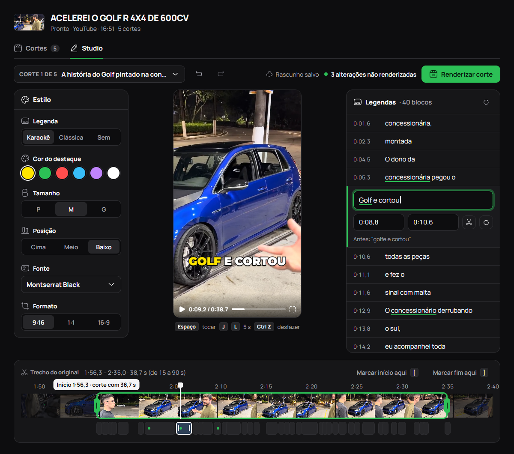
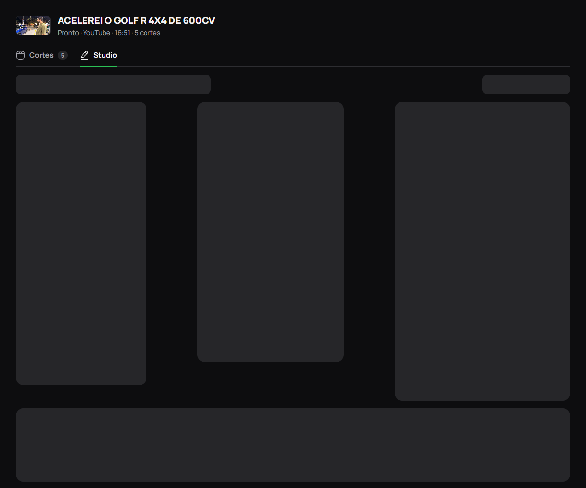
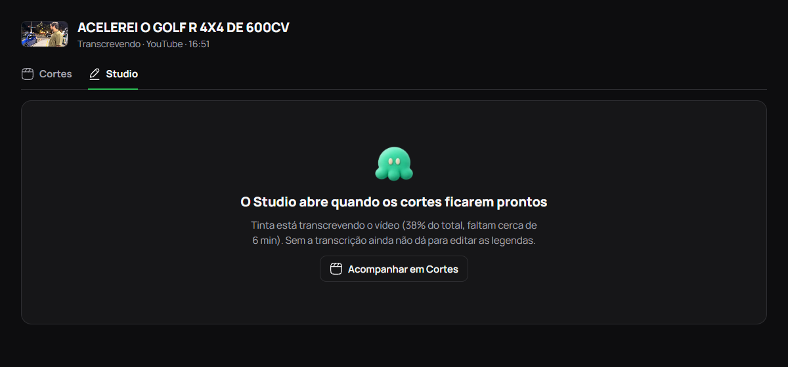
A Brasa está trabalhando. O editor fica só para leitura, porque o servidor coloca o vídeo de volta na fila.
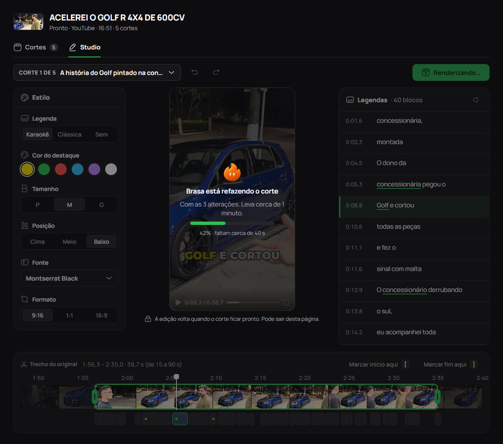
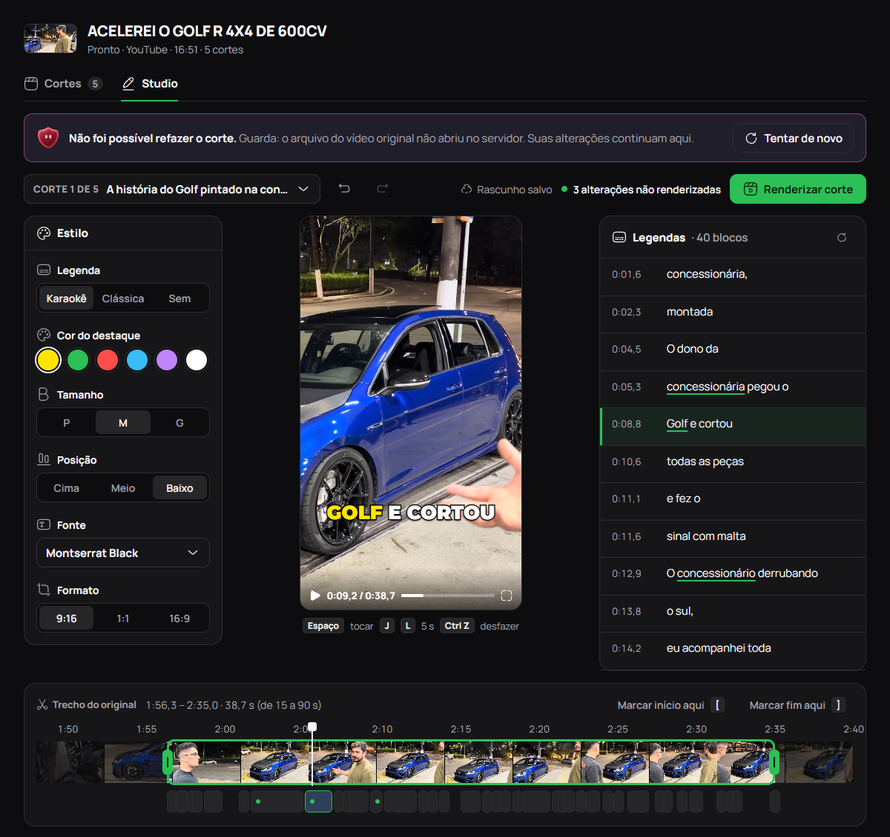
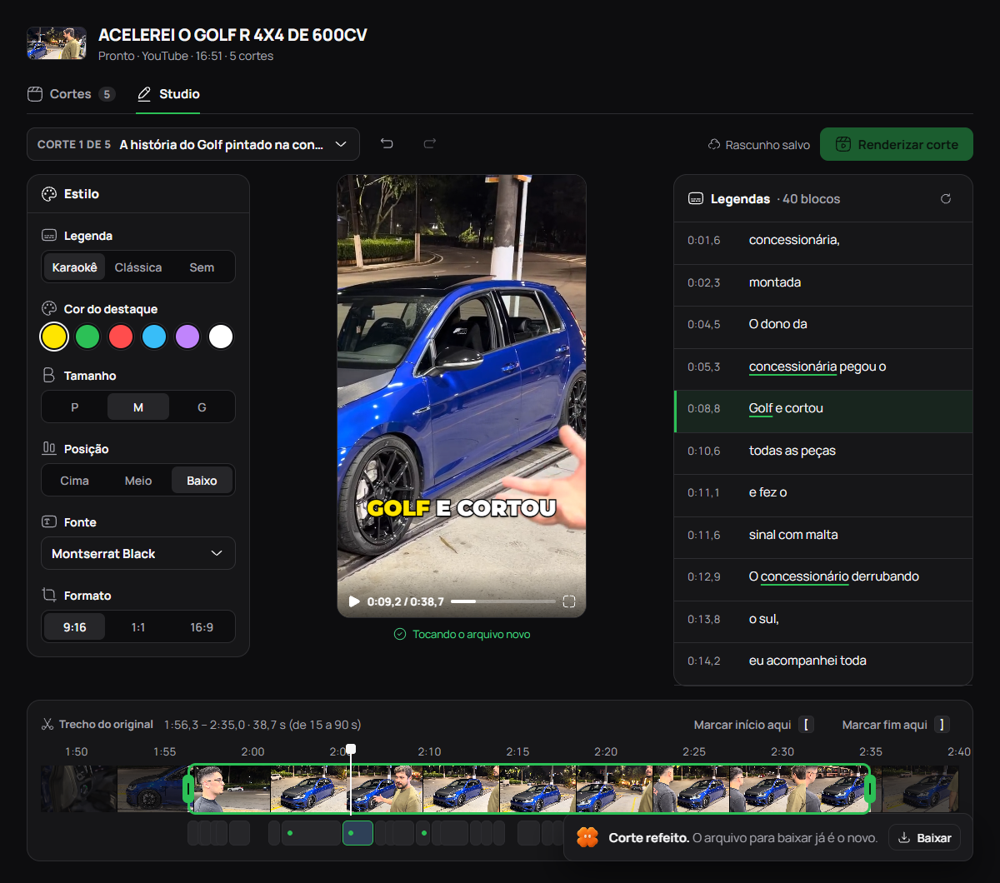
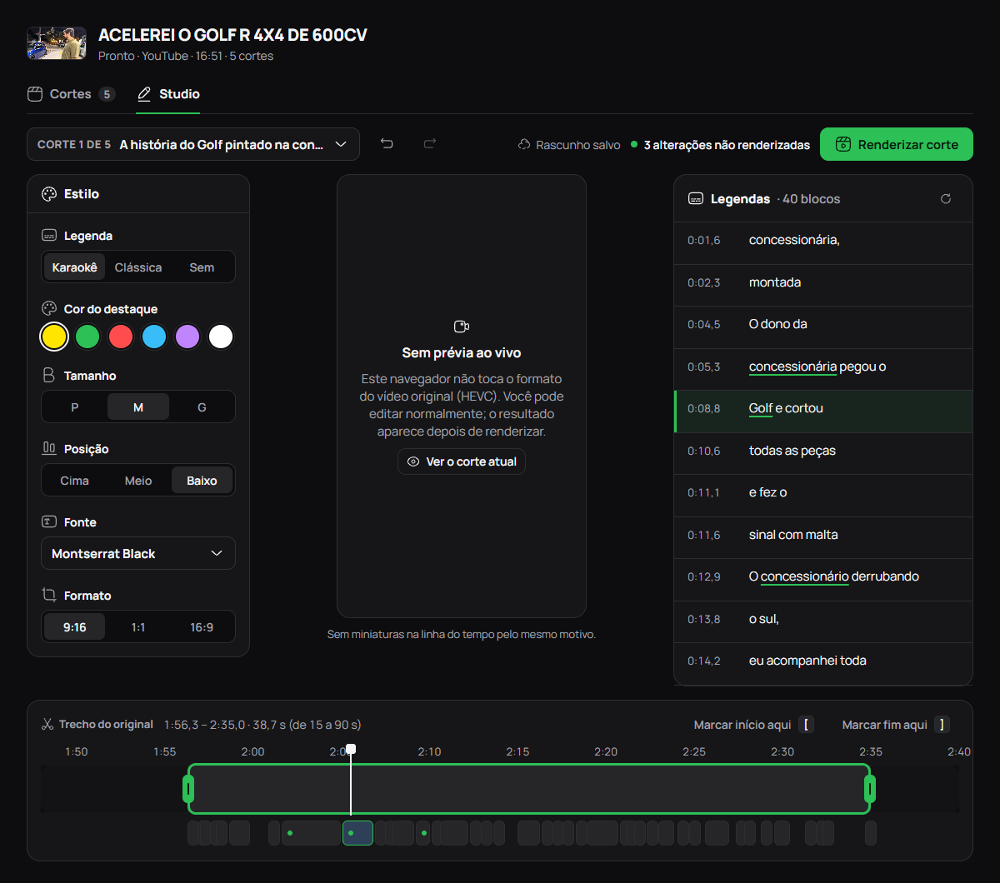
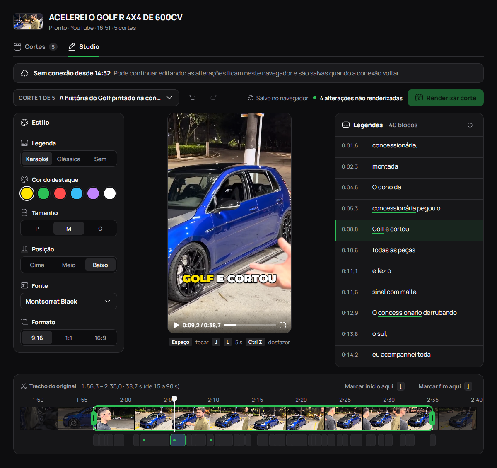
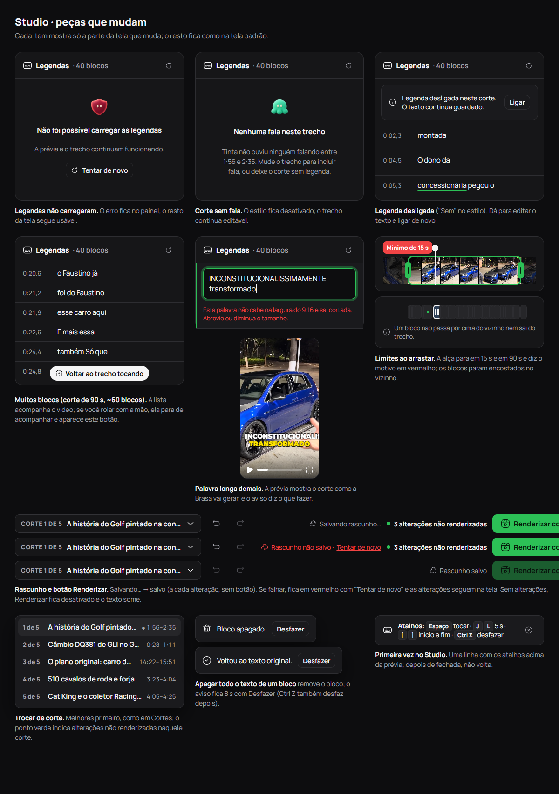
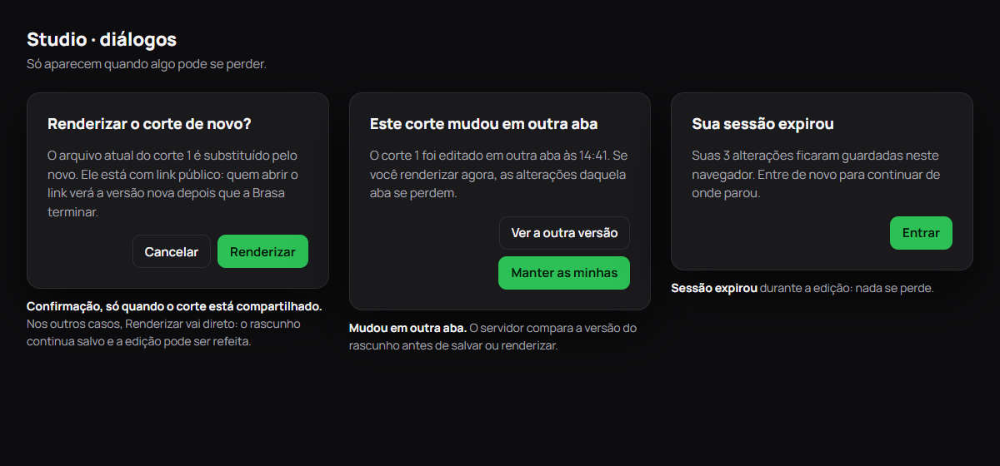
No celular não há linha do tempo para arrastar: o trecho é ajustado de 0,5 em 0,5 s ou pelo ponto da prévia.
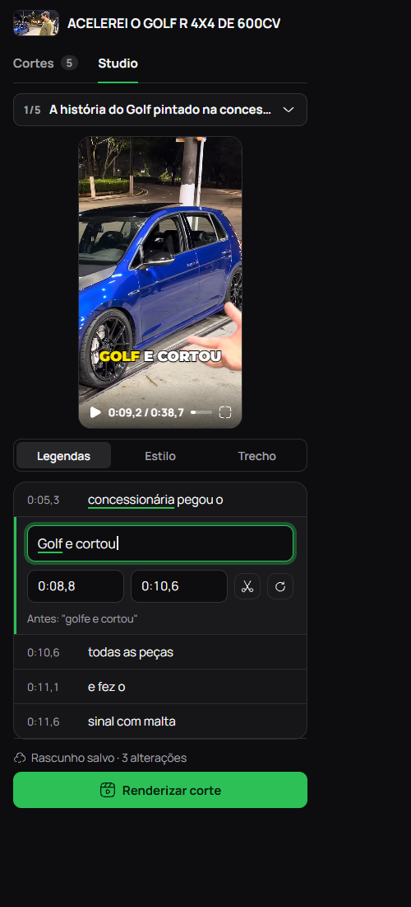
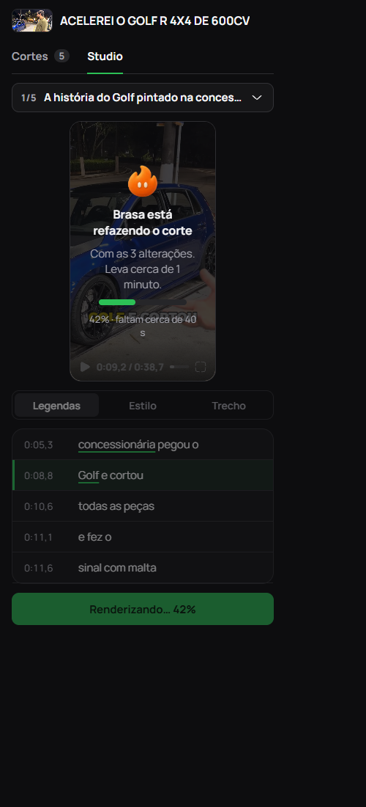
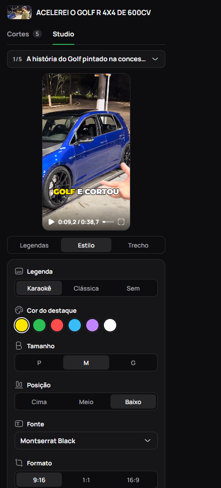
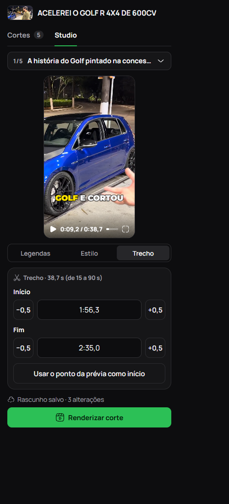